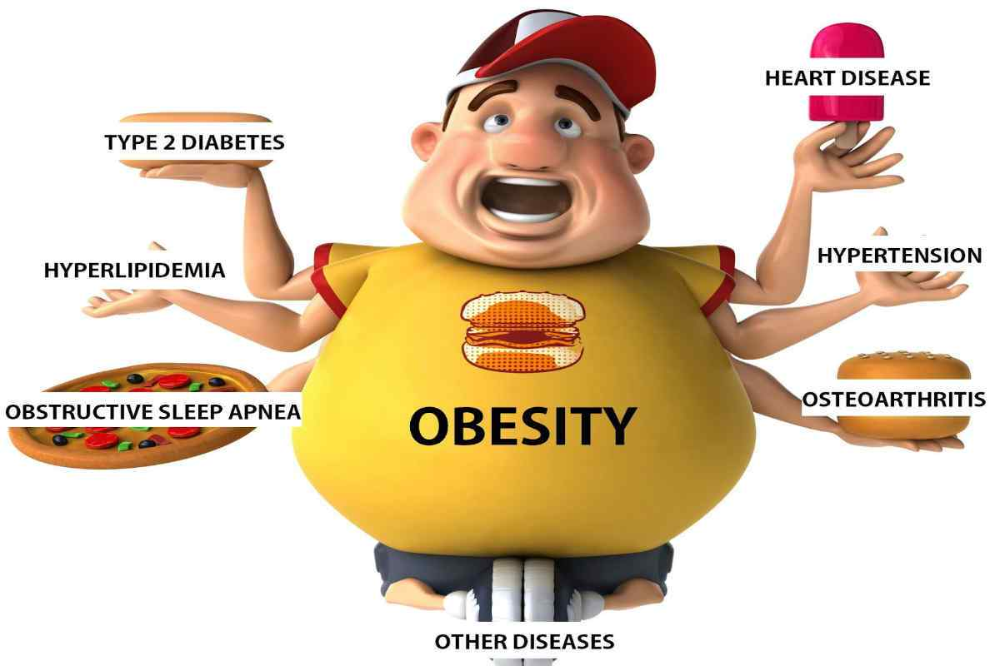

Risks associated with being overweight
Being overweight increases the risk of a number of serious diseases and health conditions. Below is a list of said risks, according to the Centers for Disease Control and Prevention (CDC):

- High blood pressure
- Higher levels of LDL cholesterol, which is widely considered "bad cholesterol," lower levels of HDL cholesterol, considered to be good cholesterol in moderation, and high levels of triglycerides
- Type II diabetes
- Coronary heart disease
- Stroke
- Gallbladder disease
- Osteoarthritis, a type of joint disease caused by breakdown of joint cartilage
- Sleep apnea and breathing problems
- Certain cancers (endometrial, breast, colon, kidney, gallbladder, liver)
- Low quality of life
- Mental illnesses such as clinical depression, anxiety, and others
- Body pains and difficulty with certain physical functions
- Generally, an increased risk of mortality compared to those with a healthy BMI
As can be seen from the list above, there are numerous negative, in some cases fatal, outcomes that may result from being overweight. Generally, a person should try to maintain a BMI below 25 kg/m2, but ideally should consult their doctor to determine whether or not they need to make any changes to their lifestyle in order to be healthier.